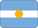

Brazil
History
A declaration asserted Brazil's claim to sovereignty.
Brazil's sovereignty gained formal recognition.
Brazil became a republic, replacing the previous constitutional arrangement.
The current constitution came into force, setting the basic framework for today's Brazil.
 Part ofSouth AmericaMore countries, cities and routes.
Part ofSouth AmericaMore countries, cities and routes.Short facts
RegionEastern South America
LanguagePortuguese
Time zoneBRT (UTC-3, multiple zones)
Drives onRight
Worth seeing
- Rio de Janeiro: Iconic beaches, Carnival, Christ the Redeemer, and Sugarloaf Mountain.
- Amazon Rainforest: The world's largest tropical forest, home to millions of species.
- Iguazu Falls: Spectacular waterfalls on the Argentina border amid lush subtropical jungle.
Find a city in Brazil
Showing all cities
 Blumenau
Blumenau Brasilia
Brasilia Rio de Janeiro
Rio de Janeiro Sao Paulo
Sao PauloPlanning questions
What is Brazil known for?Rio de Janeiro, Amazon Rainforest, Iguazu Falls.
What is the capital?Brasilia.
Which language is useful?Portuguese.
When is the national day?7 September.
How should I browse it here?Start with the facts, jump to linked cities, then check events and topics.
Upcoming events
Showing all 9 events
 Oktoberfest Blumenau7 October 2026 – 26 October 2026 — Blumenau — Brazil
Oktoberfest Blumenau7 October 2026 – 26 October 2026 — Blumenau — Brazil Brasil Game Show8 October 2026 – 12 October 2026 — São Paulo — Brazil
Brasil Game Show8 October 2026 – 12 October 2026 — São Paulo — Brazil São Paulo Grand Prix6 November 2026 – 8 November 2026 — São Paulo — Brazil
São Paulo Grand Prix6 November 2026 – 8 November 2026 — São Paulo — Brazil Ccxp Sao Paulo3 December 2026 – 6 December 2026 — São Paulo — Brazil
Ccxp Sao Paulo3 December 2026 – 6 December 2026 — São Paulo — Brazil New Year's Eve Copacabana31 December 2026 – 1 January 2027 — Brazil — Brazil
New Year's Eve Copacabana31 December 2026 – 1 January 2027 — Brazil — Brazil Rio Carnival5 February 2027 – 10 February 2027 — Rio de Janeiro — Brazil
Rio Carnival5 February 2027 – 10 February 2027 — Rio de Janeiro — Brazil Lollapalooza Brazil19–21 March 2027 — São Paulo — Brazil
Lollapalooza Brazil19–21 March 2027 — São Paulo — Brazil São Paulo Fashion Week6 April 2027–11 April 2027 — São Paulo — Brazil
São Paulo Fashion Week6 April 2027–11 April 2027 — São Paulo — Brazil FIFA Women’s World Cup24 June–25 July 2027 — Multiple cities — Brazil
FIFA Women’s World Cup24 June–25 July 2027 — Multiple cities — BrazilUse Brasilia as the first planning anchor for Brazil, then compare the city, food and worth-seeing notes on this page.
Food & drink
 Street food
Street food Coffee
CoffeeKnown for
Rio de JaneiroAmazon RainforestIguazu FallsBrasiliaStreet foodCoffee
 Music & Culture
Music & Culture